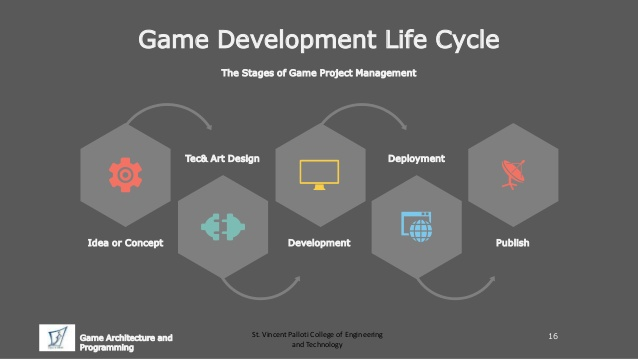

Game development
Przemysł gier komputerowych jest aktualnie porównywalny, a może nawet przewyższający swoim rozmachem przemysł filmowy. Programowanie gier łączy w sobie nie tylko inżynierię oprogramowania, grafikę i multimedia, sztuczną inteligencję, nauki ścisłe i prawa fizyki, ale także pracę wielu osób związanych ze sztuką.
Dzięki książkom z działu Programowanie gier dowiecie się jak wygląda proces tworzenia gry od pomysłu, przez projektowanie, tworzenia oprawy multimedialnej, właściwie programowanie a skończywszy na testowaniu. Poznacie sposoby wykorzystania interfejsów OpenGL i DirectX. Nauczycie się gdzie w kodzie warto wykorzystać Asembler zamiast języków wyższych takich jak C++ czy Java.
